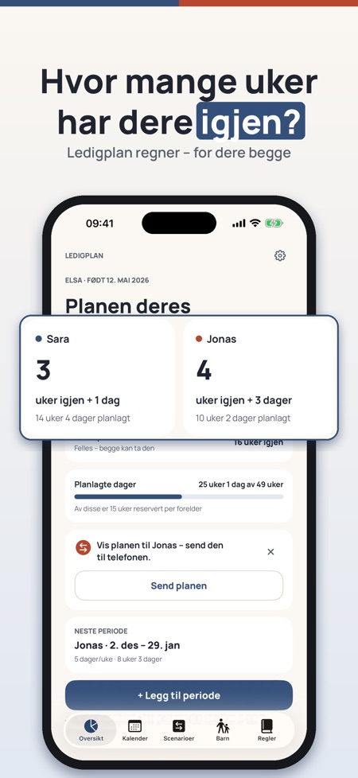
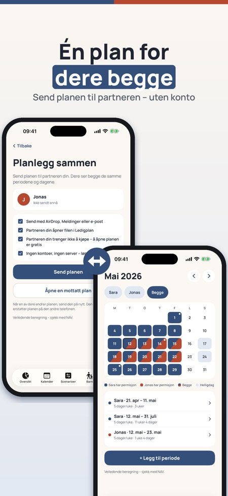
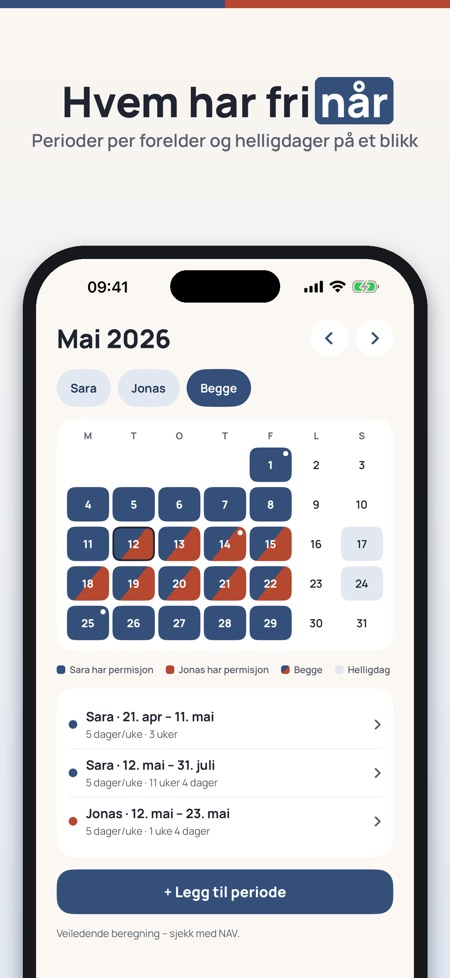

Barsel: tell ukene, planlegg. Planlegg 2027 nå: legg inn permisjonen før jul og se ukene dere har igjen – for dere begge.



Hvor mange uker har dere igjen – og hvem tar hva? Ledigplan regner for dere begge, viser permisjonen i en felles kalender og lar dere sammenligne planer før dere bestemmer. Ingen innlogging, ingen konto.
Myndighetenes verktøy planlegger én forelder om gangen. Ledigplan er én plan for dere begge.
Oversikt, kalender og regler for ett barn og én plan kan brukes uten kjøp. Ledigplan Plus er et engangskjøp som låser opp deling med partner, scenarioer, eksport og flere barn. Ingen abonnement.
Beregningen er veiledende. Ledigplan er uavhengig og ikke tilknyttet NAV, Försäkringskassan, Udbetaling Danmark eller Kela. Søknaden sender du alltid til myndigheten.